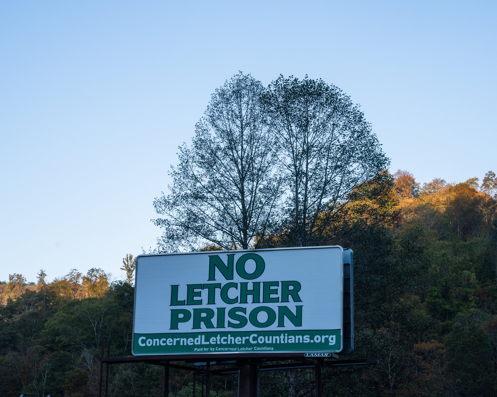

Caring for our home
Concerned Letcher Countians believe siting a federal prison in Letcher County, Kentucky, will harm our economy, our environment, and our community life rather than improve it.
We are a group of volunteers who care about our county and its future.

The proposed prison
Concerned Letcher Countians and allies around the country argue that locating this proposed prison on top of a mountaintop-removal strip mine site will lead to new damage to the land, water, and wildlife, while creating health risks for prison staff, inmates, and surrounding residents.
There is little evidence that this prison will generate jobs for the region. Study after study shows that prisons do not create economic opportunity for rural areas like Letcher County. Even the Bureau of Prisons admits that only a small number of jobs are likely to go to local residents.
Federal Correctional Institution (FCI) Letcher would be the fifth federal prison in eastern Kentucky alone, and would cost the public more than $505 million.
Why we oppose FCI Letcher
- There is no established need. The federal prison population has declined by 26% over the last dozen years.
- Most of the money goes to moving a mountain. Of the $506 million set aside, $466 million would go to leveling the site, which raises the risk of another devastating flood.
- The jobs won’t go to local people. The three federal prisons already in southeastern Kentucky have 90 open positions, and the Bureau says only 16% of Letcher County residents would be eligible to work there.
- Prison counties haven’t prospered. Martin, Clay, and McCreary counties all have federal prisons, and all are still classed as economically distressed.
Recent news
-
Updates on proposed federal prison site in Kentucky
Appalachian Voices
-
Appalachia deserves more than coal or cages. Another federal prison is not the answer.
Mandi Fugate Sheffel, Lexington Herald-Leader
 Trail towns, not jail towns!
Trail towns, not jail towns! Prison jobs? We all want jobs for Letcher County!
Prison jobs? We all want jobs for Letcher County! Amelia Kirby speaks at the EIS hearing in Letcher County
Amelia Kirby speaks at the EIS hearing in Letcher County